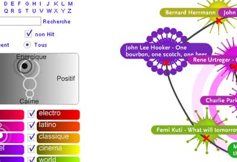

Musicovery - MusicPlasma with Music
Adam points me to Musicovery a music discovery tool similar to MusicPlasma that lets you explore a music similarity space in a way very similar to MusicPlasma, but with the added feature that you can actually listen to music. The similarity to MusicPlasma is not a coincidence, both were developed by Frederic Vavrille.

The music similarity model seems to be based on a 2D mood scale similar to the Thayer mood model.
Musicovery is a pretty compelling music discovery tool. It is the only interactive tool that allows you to listen to music (sites like last.fm and Pandora give you a linear, one-song-at-a-time experience due to internet streaming licensing requirements). I'm not sure how Musicovery is licensing their music to allow interactive play like this, but it is a clear improvement over the Pandora/Last.fm style. I hope we'll see more sites like this.
There's absolutely no supporting documentation on the site so it is hard to tell how things work, how their similarity is determined (automatically, socially or by human editors), nor is it clear how deep the music catalog (although there seems to be a wide range of genres covered).
I was never a fan of MusicPlasma, I though it was slow, the similarity was trivial and you couldn't listen to the music. Now Musicovery has addressed all of these issues giving us a compelling music discovery tool that is fast, uses an interesting notion of similarity and most important of all, lets you listen and interact with the music. 5 stars!

Posted by Tricia Mangan on June 12, 2006 at 12:17 AM EDT #
Posted by levee on June 12, 2006 at 07:48 AM EDT #
I really would like to have a look at it, but...
Quoted from their website:
We will be back soon... Hello, We are sorry to have to stop temporarily the radio. The number of visitors has reached such a level that given the way we currently operate the broadcast the cost has become too high. Thanks to all who encouraged us, made comments on the service and recommended it around them. We plan to rapidly provide the service again on a more sustainable basis. For those who would like to get an alert when the service is back, just click [email protected]
That's the problem of announcingPosted by oscar on June 16, 2006 at 05:56 AM EDT #